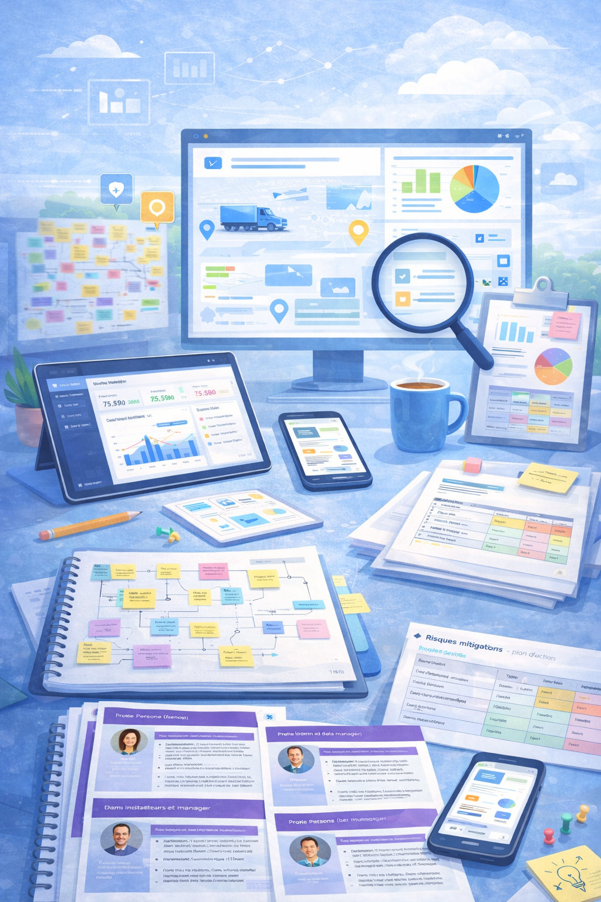
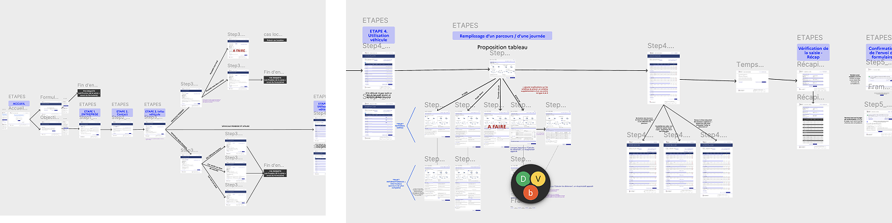
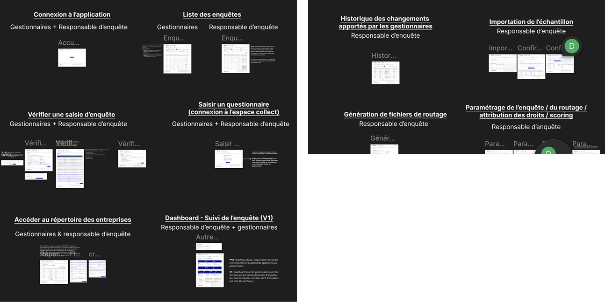

Étude de cas
Améliorer la collecte et la fiabilité de données métier (TRM)
Repenser les parcours utilisateurs et la structuration du produit pour faciliter la collecte de données sur le transport routier de marchandises, améliorer leur qualité et préparer une mise en développement plus solide.
Le point de départ
L’outil existant de collecte de données sur le transport routier de marchandises présentait plusieurs limites, à la fois pour les chauffeurs amenés à renseigner les enquêtes terrain et pour les gestionnaires chargés de vérifier, manipuler et partager les données collectées.
L’application ne permettait pas de fluidifier ni de sécuriser correctement la collecte. Les chauffeurs devaient remplir manuellement un questionnaire sur les poids lourds, ce qui générait régulièrement des erreurs de saisie. De leur côté, les gestionnaires rencontraient des difficultés pour vérifier, exploiter et partager les informations efficacement.
Le besoin n’était donc pas seulement de refaire des écrans, mais de repenser plus globalement le produit : ses parcours, sa structure, ses profils utilisateurs et les bases nécessaires à une future mise en développement.
L’ambition du projet était de poser un cadre produit plus robuste pour un sujet complexe, à forts enjeux réglementaires et métiers, en clarifiant à la fois l’expérience des chauffeurs et celle des gestionnaires de données.

Projet : structurer un produit plus clair, plus fiable et prêt à être développé
L’enjeu n’était pas seulement de moderniser l’existant, mais de construire une vision produit plus claire, capable de mieux répondre aux usages terrain, de réduire les erreurs de saisie et de fournir une base fiable pour la suite du développement.
Comprendre un écosystème complexe
- Analyse de l’écosystème existant et des parcours actuels
- Étude des données disponibles, des rapports et d’anciens entretiens
- Entretiens utilisateurs complémentaires avec chauffeurs et gestionnaires
- Prise en compte des contraintes réglementaires françaises et européennes
Traduire les besoins en structure produit
- Formalisation des besoins utilisateurs, irritants et opportunités
- Création de personas, experience map, user journey et architecture de l’information
- Conception de prototypes haute fidélité pour les deux interfaces
- Préparation d’une roadmap et d’un backlog pour le futur développement
Préparer une mise en développement plus solide
Le projet ne consistait pas uniquement à produire une nouvelle interface. Il s’agissait aussi de clarifier la structure du produit, les priorités et les risques, afin de rendre les futures décisions plus fiables et le passage au développement plus fluide.
- mieux distinguer les besoins des chauffeurs et ceux des gestionnaires
- rendre les parcours plus compréhensibles et plus cohérents
- fiabiliser les futures décisions produit grâce à un cadrage plus clair
- poser des bases concrètes pour un développement réaliste et priorisé
Ce que ça a changé
La mission a permis de transformer un produit existant difficile à faire évoluer en une vision plus claire, articulée autour d’usages réels, d’interfaces concrètes et d’un cadre produit plus robuste pour la suite du développement.
Ce que j’ai apporté à ce projet
Sur ce projet, j’ai apporté à la fois une lecture produit, UX et stratégique. Mon rôle a consisté à faire le lien entre les besoins utilisateurs, les contraintes métier, les enjeux réglementaires et la préparation d’un cadre produit exploitable.
Ce projet montre ma manière d’intervenir sur des sujets complexes : partir d’un existant difficile, clarifier les parcours, structurer les priorités et produire des livrables qui servent autant la conception que les décisions à venir.
Exemples de livrables


